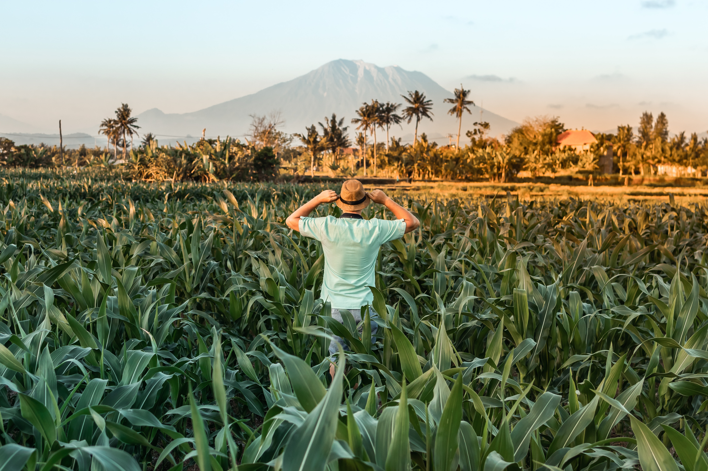

Animal Husbandry Schemes
Approximately Rs. Rs. 275 / - or Rs. ANH-9 - The farmer has to own his own land to get the minikitas. - After the plot is created, it is necessary to show the local livestock inspector-veterinary officer as well as the technical officer of the department. - Report the weight of the fodder produced after the harvest to the veterinary officer or livestock inspector to show the benefit of the plot showing to other farmers of the village - There is need for convenience.- For the purchase of goats of this scheme, the Local Purchase Committee of the taluka level will have to buy the goats through the District Panchayat (Animal Husbandry). - Under this scheme, beneficiaries will have to pay 50% of the cost of food, fodder, housing and mining. - This unit will be maintained for three years under normal circumstances. Note on milk production to beneficiaries
Rs. 60000 / - 50% of the unit price or a maximum of Rs. 30000 / - whichever is less than two (ANH-12) or Rs. 240000 / - 50% of the unit price or a maximum of Rs. 120000 / - whichever is less than two (ANH-13). Assistance for setting up of goat units (10 + 1) for ANH-12 Scheduled Castes / Women and General Category - The selection and implementation of the beneficiaries will be through the District Panchayat.
Rs. 1000 / - 75% of the unit price or a maximum of Rs. 750 / - whichever is less. ANH-9 All farmers, ranchers who own livestock can avail this scheme.
Rs. 30000 / - 50% of the unit price or a maximum of Rs. 15000 / - whichever is less. ANH-9, which owns farmer-ranching cattle and owns land owned by them as a kettle shed, may benefit from this scheme.
For a maximum of one animal 75% of the last 3 months of gestation requirement or a maximum of Rs. Mine worth 2000 worth of mine. - The beneficiary will be entitled to the benefit of one plan per 1 month. - Pregnancy - 3 to 3 kg daily during the last three months of pregnancy. Accordingly, the grain will remain as this. - As per 25% of the grain, Shupal must feed himself. - These 3 items will be the priority in the scheme for spreading artificial insemination.
Unite Coast (Jafarabad buffalo Rs. 37000 / -, Bunny buffalo Rs. 38000 / -, Surati buffalo Rs. 30100 / -, Mehsani buffaloes of Rs. .F Guy Guy Rs. 33200 / -, Jersey Cow Rs. 100% interest assistance for cow-buffalo unit. - The beneficiary must maintain the unit for at least five years.- The beneficiary should have been given a loan to set up the unit through a financial institution approved by the nationalized bank and the Reserve Bank of India. Only then will the amount of interest assistance be credited to the beneficiary's loan accounts in half-yearly installments in June and December.- At the expense of the applicant - The implementing body of the scheme will first have to make a report of the unit from the concerned bank as per the prescribed form-bank. - If a beneficiary becomes defaulter within the interim, more than three installments will not be eligible for interest assistance for the period and defaulter amount.
૫ Extreme pandemics occur in pigs, including pesticides, bird flu and rabies and poisoning (food, snake bait, chemical poisoning, etc.). Then, especially the poor cattle, poultry, ducks and cattle are greatly harmed and the livelihood of such 8 poultry, poultry and ducks are taken away And cattle breeders with 1 poultry ducks become destitute in such circumstances, the poultry keepers getting reasonable financial support at the market price of 1 poultry duck and immediately start keeping their poultry restored. Implementation of this scheme is prohibited for the purpose.
Rs. 6000 / - 75% of the unit price or a maximum of Rs. 4500 / - whichever is less, in the form of bird assistance (25 RIR bird units) or Rs. 36000 / - 75% of the unit price or a maximum of Rs. 27000 / - in the form of two which are less than two bird assistance (100 broiler bird unit (100 broiler farm establishment)).
Aid Schemes of Fisheries
50% of the cost of fish seed / shrimp seed and 50% of the cost of transportation and 100% assistance of Scheduled Tribe. Account / GFCCA Will have to buy.
50% of the cost or (1) Tin boat-net Rs.7500 / - (boat-Rs5000 / -and net of Rs.2500 / -) whichever is less than (2) FRP. Boat-net Rs.15000 / - (Boat-Rs.1500 / - and net of Rs.2500 / -) whichever is less. The seller of the GFC / Manufacturer will have to purchase the seller.
50000 / - per building for construction of 35 sq m in minimum.
50% of the cost or Rs. 5000 / - whichever is less than two [(1) Insulated Box Rs.1000 / - (2) Simple Box Rs.500 / - (3) Reduced Rs.2500 / - (4) Weight Unit Unit Rs.1000 / -] (Male beneficiaries of Scheduled Castes are available). Will have to buy from the open market.
50% of the cost or whichever is less than Rs.2.50 lakhs, 75% of the cost in case of Scheduled Castes or Rs.3.75 lakhs whichever is less. Whichever is less (2) 75% of the purchase price of a three-wheel vehicle is Rs.1.50 lakh whichever is less.
30% of the cost from the account or Rs. 45000 / - whichever is less than two and NFDB. 50% of the cost or Rs.75000 / - whichever is less.
100% help. Must be purchased from a valid protolump pump.
(A) Equipment for two battery boats (1) Inverter Rs.8500 / - or purchase price less than two (2) Electric fireplace .3000 / - or purchase price less than two (3) Electric Water Pump Rs.3000 / - or purchase price less than two (4) CLF Tuber.500 / - or Rs.15000 / - whichever is less than two (b) FRP boat Equipment for (1) Cost of Solar Electric Lantern or Rs.3500 / - whichever is less.
50% of the cost or Rs.20000 whichever is less than two [(1) (Life Jacket Rs.1100 / - (6 Nos) (2) Life Boy Ring Rs.500 / - (2 Nos) (3) Emergency Light Rs. .5000 / - (2 Nos)].
Heart of Perfect Farming